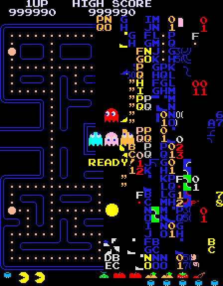

Overflow and Rounding
Only So Much Change in the Drawer
A cash register has nine $10 bills, nine $1 bills, and nine dimes.
What is the largest amount of change you could give someone? The smallest amount, other than zero?
What would you do if someone needed exactly seven cents in change?
From Money to Bits
Even though money is theoretically infinite, a register drawer can only make certain amounts, depending on which denominations happen to be sitting in it. Computers store numbers the exact same way.
If we swap dollars and cents for bits, zeros and ones, which numbers will a computer run out of room for? Which numbers will it not be able to make exactly?
That's what we're looking at today: two problems computers hit when they store numbers in a fixed number of bits.
Binary / Decimal Odometer
Press Start to watch this 8-bit odometer count up in binary and decimal at the same time. Drag the speed slider to speed it up, and drag the value slider to jump straight to any 8-bit value instead of counting up to it.
Now press Stop. Set the values just below the highest possible number, press Start, and watch closely as it counts past the top: the decimal count keeps going, but watch what happens to the bits.
What happens to the reading once it passes 255?
Does the number still represent how many times the odometer has actually ticked?
Get Out Your Flippy-Do

We'll use it to answer a few quick questions about limits.
Pushing the Limits of the Flippy-Do
Overflow and max: What value would cause your Flippy-Do to overflow, the same way the odometer did? What is the highest number we can represent with it?
Making room for more: What adaptation could you make to represent a higher value? Using that adapted Flippy-Do, how many total numbers could it represent?
Shrinking it down: If it had only 4 flaps, 4 bits, what would the highest number it could show be? How many numbers total could a 4-bit Flippy-Do represent?
Numbers in Computers
Computers store everything, numbers, text, images, as binary: a series of 1s and 0s. How many bits a number is given in memory decides how big or small it's allowed to be. We call that fixed allotment a data type.
| Data Type | Bits | Minimum | Maximum |
|---|---|---|---|
| byte | 8 | 0 (unsigned) | 255 |
| short | 16 | −32,768 | 32,767 |
| int | 32 | −2,147,483,648 | 2,147,483,647 |
| long | 64 | HUGE! | Even huger! |
Game Consoles
Game consoles used to advertise their processor's bit size for a reason: it set a hard ceiling on the numbers the hardware could work with directly.
| Console | "Bitness" | What It Meant |
|---|---|---|
| NES | 8-bit | Could only work with 8-bit numbers at a time. |
| SNES | 16-bit | Could store bigger numbers, do faster math, and drive better graphics. |
| Nintendo 64 | 64-bit | Could handle bigger numbers, wider color palettes, and more memory per object. |
The original Pac-Man would break with a "kill screen" once a player reached level 256. Why do you think that happened?
Pac-Man stores the current level in a single 8-bit byte, 0 to 255. Level 256 overflows that byte back to 0. The code meant to draw the bottom fruit counter then malfunctions and tries to draw 256 separate fruit items at once, causing the screen to fill with random characters.

Room to Grow?
- What does the binary odometer show us about representing large numbers?
- If we had a big enough odometer, or a big enough Flippy-Do, could we eventually represent every possible number?
Maximums in Decimal
In a base-10 (decimal) number, the largest value you can store in a fixed number of digits is 10digits − 1.
- With 3 digits, the maximum is 103 − 1, that is 1000 − 1, or 999.
- The count of numbers you can represent is one more than that maximum, since 0 counts too.
- So 3 digits can represent 103, or 1000 numbers: everything from 0 to 999.
Maximums in Binary
In a base-2 (binary) number, the largest value you can store in a fixed number of bits is 2bits − 1.
- With 3 bits, the maximum is 23 − 1, that is 8 − 1, or 7.
- 3 bits can represent 23, or 8 numbers: everything from 0 to 7.
- That's exactly why our 8-bit odometer and Flippy-Do top out at 255: 28 − 1 = 255, out of 28 = 256 possible values.
Amounts Smaller Than One
Thinking back to how we represented whole numbers with our Flippy-Do, the 1s, 2s, 4s, and 8s stood in for dollar bills, tens, and twenties. So far, we've only talked about whole numbers in binary.
In a cash register, how would you deal with an amount smaller than a dollar, say seven cents?
In binary, we don't get pennies, nickels, or dimes. But we do get halves, fourths, eighths, and so on.
Binary Places Below the Point
| Binary Place | Value |
|---|---|
| 20 | 1 |
| 2−1 | 0.5 |
| 2−2 | 0.25 |
| 2−3 | 0.125 |
Decoding 0.101
Let's say we have the binary number 0.101. What does each bit represent, and what decimal number does it add up to?
0.5 + 0.125 = 0.625 = ⅝
What is the equivalent of the binary number 0.11 in decimal?
0.5 + 0.25 = 0.75 = ¾
What is the equivalent of 0.375 in binary?
0.25 + 0.125 = 0.375 = 0.011
Candy Shop Challenge
You and a partner are opening a candy shop. Here are the prices of four candies you'll be selling. Your shop's computer system takes input in 4-bit binary numbers, so you need to represent each price that way. Work out your representation for each value using your Flippy-Do and a white board.
| Candy | Decimal Price | Binary Price |
|---|---|---|
| Gummy Bears | $1.76/lb | |
| Chocolate | $4.16/lb | |
| Licorice | $7.52/lb | |
| Mints | $0.48/lb |
How did you decide which binary number to use for each price?
Two Scales, Two Answers
There are scales from two different manufacturers in your shop. Both use 4-bit binary numbers to store and display the weight of candy.
Both scales are weighing the exact same bowl of gummy bears: 3.3 pounds.
Always rounds the weight down to the next whole number.
Always rounds the weight up to the next whole number.
What problems could come from having both types of scales in a single one of your stores?
With the two scales, who pays the difference between the true price and what the scale shows: the shop owner or the customer?
Always rounds the weight down to the next whole number.
Always rounds the weight up to the next whole number.
Binary Fractions
- Binary can precisely represent some fractional amounts from the decimal number system.
Ex: 4.75 in decimal → 0100.110 in binary - Binary cannot precisely represent other fractional values from the decimal number system.
Ex: 0.39
| 23 | 22 | 21 | 20 | 2−1 | 2−2 | 2−3 |
|---|---|---|---|---|---|---|
| 8 | 4 | 2 | 1 | 0.5 | 0.25 | 0.125 |
| 0 | 1 | 0 | 0 | 1 | 1 | 0 |
Two Kinds of Error
With a fixed number of bits, a computer can only represent a fixed set of numbers.
Overflow Error
The error from attempting to represent a number that is too large.
Round-off Error
The error from attempting to represent a number that is too precise. The value gets rounded instead.
1.48 is closest to the 3-bit value 1 (binary 001), so storing it is a round-off error.
9 can't be represented in 3 bits at all, so storing it is an overflow error.